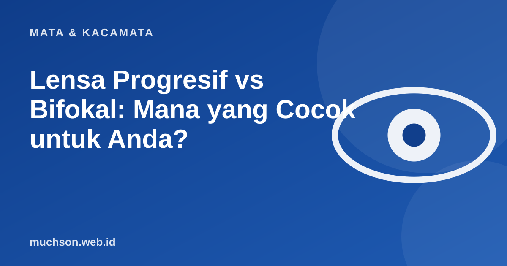

Beranda › Artikel › Mata & Kacamata
Mata & KacamataLensa Progresif vs Bifokal: Mana yang Cocok untuk Anda?
Setelah usia 40, banyak orang bergantian memakai kacamata jauh dan kacamata baca. Lensa progresif dan bifokal menjawab itu dalam satu kacamata, tetapi berbeda cara dan perasaan memakainya.

Cara kerja yang berbeda
Mengapa progresif butuh adaptasi?
Pada lensa progresif, bagian tepi samping lensa memiliki distorsi yang tidak dapat dihindari, karena kekuatan berubah dari atas ke bawah. Anda harus belajar menggerakkan kepala, bukan hanya mata, untuk melihat ke samping, dan menurunkan pandangan untuk membaca. Biasanya adaptasi memerlukan beberapa hari sampai dua minggu.
Mana yang sebaiknya Anda pilih?
Kuncinya di pengukuran
Progresif butuh pengukuran yang teliti: jarak pupil, tinggi lensa, dan kecocokan frame. Memilih toko yang berpengalaman dan menyediakan konsultasi membuat perbedaan besar pada kenyamanan.
Tanya jawab
Apakah progresif lebih baik dari bifokal?
Bukan soal lebih baik. Progresif lebih halus dan tidak ada garis, tetapi butuh adaptasi dan lebih mahal. Bifokal lebih sederhana.
Bolehkah mengemudi dengan lensa progresif?
Boleh setelah terbiasa. Beberapa hari pertama, hindari mengemudi jauh sampai Anda nyaman.
Apakah semua frame cocok untuk progresif?
Tidak. Frame perlu memiliki tinggi lensa cukup agar zona dekat tersedia. Tanyakan ke optik sebelum memilih.